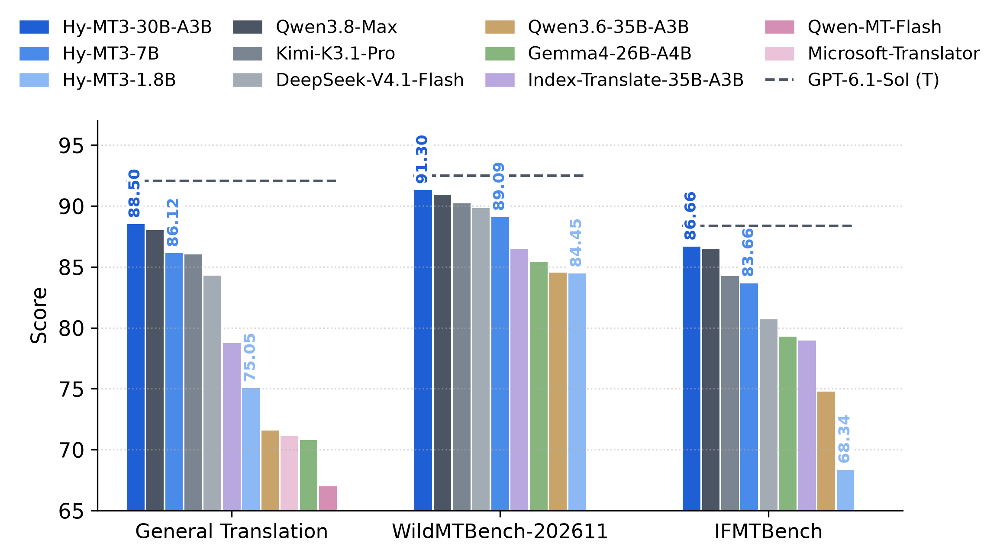
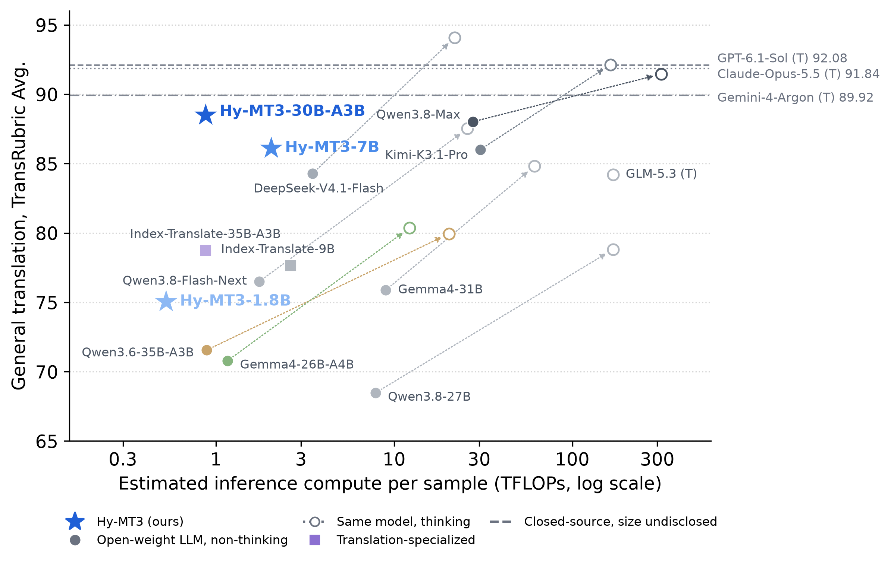

English ｜ 中文

🖥️ Official Website | 💬 GitHub | 📚 Hy-MT3 Report
Model Introduction
Hy-MT3 is the third generation of the Tencent Hy multilingual translation model family. It includes three model sizes: 1.8B, 7B, and 30B-A3B (MoE), and expands language coverage from 38 languages in Hy-MT2 to 102 languages. Compared with Hy-MT2, Hy-MT3 translates more accurately, more completely and more faithfully to user constraints: on real-world scenario data, the share of samples with mistranslations is reduced by 43%, omissions or additions by 74%, and instruction-following errors by 40%.
With only 3B activated parameters, Hy-MT3-30B-A3B achieves the best overall performance among all evaluated models in non-thinking mode, including flagship models such as Qwen3.8-Max, Kimi-K3.1-Pro and DeepSeek-V4.1-Flash, and approaches the strongest closed-source thinking models such as GPT-6.1-Sol and Gemini-4-Argon, while surpassing models that consume more than 30× its inference compute. The lightweight Hy-MT3-1.8B also outperforms commercial translation APIs such as iFlytek Translator, Microsoft Translator and Qwen-MT-Flash on general translation.
Beyond general translation, Hy-MT3 is optimized for two industrial scenarios:
- Game localization. Built with high-quality game-domain data and a professional evaluation system from the Honor of Kings team, Hy-MT3-30B-A3B matches or outperforms strong closed-source models such as Gemini 3.1 Pro on all core metrics (off-target rate, placeholder errors, rich-text errors and terminology errors). It can be plugged into game development pipelines through the open-source game translation toolchain TiMiHOKGameTranslator.
- Image translation. Hy-MT3 improves context understanding and error correction to better tolerate OCR errors in OCR-cascaded image translation, achieving the best result among models of comparable size on VISTA-Bench.
In this release, we also open-source TransRubric, a rubric-based automatic evaluation suite for translation. It outperforms other evaluation schemes on the WMT26 metrics shared task test set, and is more stable than human evaluation while achieving higher pairwise accuracy than most professional annotators.
News
- 2026.11.24 We open-sourced Hy-MT3-1.8B/Hy-MT3-7B/Hy-MT3-30B-A3B on HuggingFace and ModelScope, and released TransRubric on GitHub.
- 2026.5.21 We open-sourced Hy-MT2-1.8B/Hy-MT2-7B/Hy-MT2-30B-A3B/IFMTBench on HuggingFace and ModelScope.
- 2025.12.30 We open-sourced HY-MT1.5-1.8B and HY-MT1.5-7B on HuggingFace and ModelScope.
- 2025.9.1 We open-sourced Hunyuan-MT-7B and Hunyuan-MT-Chimera-7B on HuggingFace and ModelScope.
Results

General Translation is the average over FLORES-200, FLORES-200 low-resource, WMT26 and Mandarin⇔Minority translation; WildMTBench-202611 is built from the latest real-world scenario data; IFMTBench measures translation instruction following. General Translation and WildMTBench-202611 are scored by TransRubric. (T) denotes thinking mode; all other models, including Hy-MT3, are run in non-thinking mode.

The figure above plots general translation quality against inference compute. The x-axis is the estimated inference compute per test sample, approximately 2 × activated parameters × generated tokens (including thinking tokens), in log scale; the y-axis is the average TransRubric score on general translation. Arrows connect the non-thinking and thinking modes of the same model; dashed horizontal lines denote closed-source models whose sizes are undisclosed. Hy-MT3 models lie on the upper-left frontier: Hy-MT3-30B-A3B requires less than 1 TFLOP per sample, yet outperforms models that consume more than 30× its compute, such as Qwen3.8-Max and Kimi-K3.1-Pro in non-thinking mode.
For more experimental results and analysis, please refer to our report.
Model Links
| Model Name | Description | Download Link |
|---|---|---|
| Hy-MT3-1.8B | Hy 1.8B translation model | 🤗 Model |
| Hy-MT3-1.8B-FP8 | Hy 1.8B translation model, FP8 quantization | 🤗 Model |
| Hy-MT3-1.8B-GGUF | Hy 1.8B translation model, llama.cpp | 🤗 Model |
| Hy-MT3-7B | Hy 7B translation model | 🤗 Model |
| Hy-MT3-7B-FP8 | Hy 7B translation model, FP8 quantization | 🤗 Model |
| Hy-MT3-7B-GGUF | Hy 7B translation model, llama.cpp | 🤗 Model |
| Hy-MT3-30B-A3B | Hy 30B-A3B translation model | 🤗 Model |
| Hy-MT3-30B-A3B-FP8 | Hy 30B-A3B translation model, FP8 quantization | 🤗 Model |
| Hy-MT3-30B-A3B-GGUF | Hy 30B-A3B translation model, llama.cpp | 🤗 Model |
Hy-MT3 Translation Task Instruction Examples (Chinese-English Comparison)
Note: In the following examples, both source_lang and target_lang should use the full language names. Chinese names should be used in Chinese prompts, and English names should be used in English prompts.
| Type | Chinese prompt | English prompt |
|---|---|---|
| Default Translation | 将以下文本翻译为 {target_lang}，注意只需要输出翻译后的结果，不要额外解释： {source_text} | Translate the following text into {target_lang}. Note that you should only output the translated result without any additional explanation: {source_text} |
| Terminology | 参考下面的翻译： {text} 翻译成 {text} {text} 翻译成 {text} {text} 翻译成 {text} 将以下文本翻译为 {target_lang}，注意只需要输出翻译后的结果，不要额外解释： {source_text} | Reference the following translations: {text} translates to {text} {text} translates to {text} {text} translates to {text} Translate the following text into {target_lang}. Note that you must ONLY output the translated result without any additional explanation: {source_text} |
| Style | 请将以下文本翻译为 {target_lang}。 注意翻译的风格要严格符合【{target_style}】 {source_text} | Please translate the following text into {target_lang}. Note that the translation style must strictly conform to [{target_style}]: {source_text} |
| Personalization | 【待翻译文本】 {source_text} 【翻译任务】 1、{user_preferences} 2、{user_preferences} 3、…… 4、将【待翻译文本】翻译为 {target_lang}。 | [Source Text] {source_text} [Translation Tasks] 1. {user_preferences} 2. {user_preferences} 3. ... 4. Translate the [Source Text] into {target_lang}. |
| Delimiters | 请将以下文本准确翻译为 {target_lang}。 你必须在译文中保留等量的分隔符，绝对不可遗漏、转义或翻译该符号，并注意分隔符的位置。 {source_text} | Please accurately translate the following text into {target_lang}. You must retain the exact same number of delimiters in the translation. Strictly do not omit, escape, or translate these symbols, and pay close attention to their placement. {source_text} |
| Structured Data 1 | # 任务目标 将下方 {source_text} 中的 {format_type} 格式数据翻译为 {target_lang}。 # 严格约束 1. 结构锁定：绝对保持原有的 {format_type} 数据结构、缩进和层级完全不变。 2. 选择性翻译：仅翻译面向用户展示的可见文本内容。 3. 禁止修改：严禁翻译或更改任何代码标签、键名 (Key)、变量占位符（如 {{var}}、${var}、%s、%d 等）或代码属性。 # 数据输入 {source_text} | ### Task Translate the user-facing text within the following {format_type} data into {target_lang}. ### Strict Rules 1. Structure Preservation: You MUST preserve the original {format_type} data structure, nesting, hierarchy, and indentation exactly as they are. 2. Selective Translation: Translate ONLY the visible, user-facing text content/values. 3. Strict Non-Translation: NEVER translate or alter code tags, keys, properties, object names, or variable placeholders. Leave them exactly in their original English/code form. ### Source Data {source_text} |
| Structured Data 2 | 【背景信息】 {background_text} 请结合背景信息将以下文本翻译为 {target_lang}。 【待翻译文本】 {source_text} | [Background Information] {background_text} Please translate the following text into {target_lang}, taking the provided background information into consideration. [Source Text] {source_text} |
---
Inference and Deployment
max_context: 8192
For 1.8B and 7B, we recommend using the following parameters for inference. Note that our models do not have a default system_prompt.
json{ "temperature": 0.7, "top_p": 0.6, "top_k": 20, "repetition_penalty": 1.05, "max_tokens": 4096 }
For 30B-A3B, we recommend using the following parameters for inference. Note that our models do not have a default system_prompt.
json{ "temperature": 0.7, "top_p": 1.0, "top_k": -1, "repetition_penalty": 1.0, "max_tokens": 4096 }
transformers
transformers>=5.6.0
pythonfrom transformers import AutoModelForCausalLM, AutoTokenizer import torch model_path = "tencent/Hy-MT3-30B-A3B" # Load tokenizer tokenizer = AutoTokenizer.from_pretrained(model_path, trust_remote_code=True) # Load model model = AutoModelForCausalLM.from_pretrained( model_path, dtype=torch.bfloat16, device_map="auto", trust_remote_code=True, ) model.eval() # Example inference prompt = "将以下文本翻译成英语,注意只需要输出翻译后的结果,不要额外解释:\n\n今天天气真好。" messages = [{"role": "user", "content": prompt}] inputs = tokenizer.apply_chat_template(messages, add_generation_prompt=True, return_tensors="pt").to(model.device) with torch.no_grad(): outputs = model.generate( **inputs, max_new_tokens=4096, ) response = tokenizer.decode(outputs[0][inputs["input_ids"].shape[-1]:], skip_special_tokens=True) print(response)
vllm
Build vLLM from source:
bashuv venv --python 3.12 --seed --managed-python source .venv/bin/activate git clone https://github.com/vllm-project/vllm.git cd vllm uv pip install --editable . --torch-backend=auto
Start the vLLM server:
bashvllm serve tencent/Hy-MT3-30B-A3B --tensor-parallel-size 1
sglang
Build SGLang from source:
bashgit clone https://github.com/sgl-project/sglang cd sglang pip3 install pip --upgrade pip3 install "transformers>=5.6.0" pip3 install -e "python"
Launch SGLang server:
bashpython3 -m sglang.launch_server --model tencent/Hy-MT3-30B-A3B --tp 1
Model Training
Hy-MT3 provides a complete model training pipeline, supporting both full-parameter fine-tuning and LoRA fine-tuning, as well as multiple DeepSpeed ZeRO configurations and LLaMA-Factory integration.
For detailed training documentation, please refer to: Model Training Guide
TransRubric
TransRubric is a rubric-based LLM-as-a-judge evaluation suite for fine-grained and interpretable translation quality assessment. Given a source text, a candidate translation, the translation instruction and optionally a reference translation, a TransRubric judge checks the candidate against a sample-specific rubric, identifies each issue together with its error type and severity, and outputs a pointwise score on a 0–100 scale.
- On Task 2 of the WMT26 shared task on automated translation quality evaluation, TransRubric achieves the highest segment-level PDP (0.744) and Avg Corr (0.832), ahead of the top-ranked official submission.
- Compared with 10 professional annotators on 651 Chinese⇔English translations, the per-sample standard deviation of TransRubric scores across 10 runs is only 3.31 points, versus 15.57 points across human annotators. Its pairwise accuracy (59.91%) is higher than 7 of the 10 annotators.
We release sample-specific rubrics for FLORES-200 (33 languages and 64 lower-resource languages), WMT26 GenMT and HardMTBench, together with the rubric construction prompts and the translation judge prompt. See TransRubric for details.
Quantization Tool
We provide AngelSlim, an easy-to-use, comprehensive, and efficient large model compression toolkit covering common quantization algorithms, low-bit quantization, speculative sampling, and more.
Supported Languages
Hy-MT3 supports 102 languages, including the 38 languages already supported by Hy-MT2 and 64 newly supported languages.
Supported since Hy-MT2 (33 languages)
| Language | Abbr. | Chinese Name | Language | Abbr. | Chinese Name | Language | Abbr. | Chinese Name |
|---|---|---|---|---|---|---|---|---|
| Chinese | zh | 中文 | Italian | it | 意大利语 | Khmer | km | 高棉语 |
| English | en | 英语 | German | de | 德语 | Burmese | my | 缅甸语 |
| French | fr | 法语 | Vietnamese | vi | 越南语 | Persian | fa | 波斯语 |
| Portuguese | pt | 葡萄牙语 | Malay | ms | 马来语 | Gujarati | gu | 古吉拉特语 |
| Spanish | es | 西班牙语 | Indonesian | id | 印尼语 | Urdu | ur | 乌尔都语 |
| Japanese | ja | 日语 | Filipino | tl | 菲律宾语 | Telugu | te | 泰卢固语 |
| Turkish | tr | 土耳其语 | Hindi | hi | 印地语 | Marathi | mr | 马拉地语 |
| Russian | ru | 俄语 | Traditional Chinese | zh-TR | 繁体中文 | Hebrew | he | 希伯来语 |
| Arabic | ar | 阿拉伯语 | Polish | pl | 波兰语 | Bengali | bn | 孟加拉语 |
| Korean | ko | 韩语 | Czech | cs | 捷克语 | Tamil | ta | 泰米尔语 |
| Thai | th | 泰语 | Dutch | nl | 荷兰语 | Ukrainian | uk | 乌克兰语 |
Chinese minority languages and dialects, supported since Hy-MT2 (5 languages)
| Language | Abbr. | Chinese Name | Language | Abbr. | Chinese Name | Language | Abbr. | Chinese Name |
|---|---|---|---|---|---|---|---|---|
| Tibetan | bo | 藏语 | Traditional Mongolian | mn | 传统蒙古语 | Cantonese | yue | 粤语 |
| Arabic Kazakh | kk | 阿拉伯字母哈萨克语 | Uyghur | ug | 维吾尔语 |
Newly supported in Hy-MT3 (64 languages)
| Language | Abbr. | Chinese Name | Language | Abbr. | Chinese Name | Language | Abbr. | Chinese Name |
|---|---|---|---|---|---|---|---|---|
| Greek | el | 希腊语 | Welsh | cy | 威尔士语 | Sinhala | si | 僧伽罗语 |
| Romanian | ro | 罗马尼亚语 | Catalan | ca | 加泰罗尼亚语 | Punjabi | pa | 旁遮普语 |
| Hungarian | hu | 匈牙利语 | Galician | gl | 加利西亚语 | Sindhi | sd | 信德语 |
| Bulgarian | bg | 保加利亚语 | Basque | eu | 巴斯克语 | Assamese | as | 阿萨姆语 |
| Serbian | sr | 塞尔维亚语 | Afrikaans | af | 南非荷兰语 | Odia | or | 奥里亚语 |
| Croatian | hr | 克罗地亚语 | Luxembourgish | lb | 卢森堡语 | Kannada | kn | 卡纳达语 |
| Slovak | sk | 斯洛伐克语 | Maltese | mt | 马耳他语 | Malayalam | ml | 马拉雅拉姆语 |
| Slovenian | sl | 斯洛文尼亚语 | Esperanto | eo | 世界语 | Sanskrit | sa | 梵语 |
| Albanian | sq | 阿尔巴尼亚语 | Yiddish | yi | 意第绪语 | Lao | lo | 老挝语 |
| Macedonian | mk | 马其顿语 | Armenian | hy | 亚美尼亚语 | Javanese | jv | 爪哇语 |
| Belarusian | be | 白俄罗斯语 | Georgian | ka | 格鲁吉亚语 | Sundanese | su | 巽他语 |
| Lithuanian | lt | 立陶宛语 | Azerbaijani | az | 阿塞拜疆语 | Cebuano | ceb | 宿务语 |
| Latvian | lv | 拉脱维亚语 | Uzbek | uz | 乌兹别克语 | Waray | war | 瓦瑞语 |
| Estonian | et | 爱沙尼亚语 | Kyrgyz | ky | 吉尔吉斯语 | Swahili | sw | 斯瓦希里语 |
| Finnish | fi | 芬兰语 | Turkmen | tk | 土库曼语 | Amharic | am | 阿姆哈拉语 |
| Swedish | sv | 瑞典语 | Tajik | tg | 塔吉克语 | Somali | so | 索马里语 |
| Danish | da | 丹麦语 | Tatar | tt | 鞑靼语 | Malagasy | mg | 马达加斯加语 |
| Norwegian | nb | 挪威语 | Bashkir | ba | 巴什基尔语 | Haitian Creole | ht | 海地克里奥尔语 |
| Norwegian Nynorsk | nn | 新挪威语 | Kurdish | ku | 库尔德语 | Cyrillic Kazakh | kk-Cyrl | 西里尔哈萨克语 |
| Icelandic | is | 冰岛语 | Central Kurdish | ckb | 中库尔德语 | Cyrillic Mongolian | mn-Cyrl | 西里尔蒙古语 |
| Irish | ga | 爱尔兰语 | Pashto | ps | 普什图语 | |||
| Scottish Gaelic | gd | 苏格兰盖尔语 | Nepali | ne | 尼泊尔语 |
Citing Hy-MT3
bibtex@misc{zheng2026hymt3accuraterobust, title={Hy-MT3: More Accurate, Robust and Practical Multilingual Translation Models in the Wild}, author={Mao Zheng and Zheng Li and Fangxu Liu and Tao Chen and Bingxin Qu and Bo Lv and Mingrui Sun and Hongyu Li and Hong Huang and Jinlong Song and Decheng Wu and Guanghua Yu}, year={2026}, eprint={2611.27673}, archivePrefix={arXiv}, primaryClass={cs.CL}, url={https://arxiv.org/abs/2611.27673}, }
Contact Us
If you would like to leave feedback for our R&D and product teams, you are welcome to contact the Tencent Hunyuan LLM team. You can reach us by email at hunyuan_opensource@tencent.com.